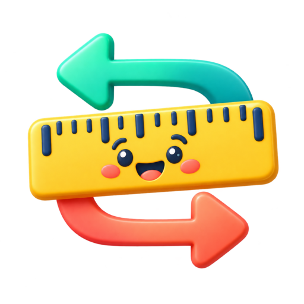
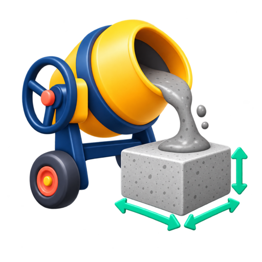

SIMPLIFIQUE SEUS CÁLCULOS
Ferramentas gratuitas
Calculadoras simples para casa, dinheiro e tarefas do dia a dia. Escolha uma ferramenta e faça seu cálculo em poucos segundos.

Encontre a ferramenta que precisa
Pesquise pelo nome ou pelo que deseja calcular. Todas as ferramentas são gratuitas, funcionam no celular e não exigem cadastro.
 Calculadora de
tinta
Calcule litros e latas para pintar paredes, descontando portas e janelas.
Calculadora de
tinta
Calcule litros e latas para pintar paredes, descontando portas e janelas. Conversor de
moedas
Converta valores entre real, dólar, euro e outras moedas usando a cotação disponível.
Conversor de
moedas
Converta valores entre real, dólar, euro e outras moedas usando a cotação disponível. Conversor de temperatura
Converta temperaturas entre Celsius, Fahrenheit e Kelvin em poucos segundos.
Conversor de temperatura
Converta temperaturas entre Celsius, Fahrenheit e Kelvin em poucos segundos. Calculadora de porcentagem
Calcule descontos, aumentos, variações e quanto uma porcentagem representa de um valor.
Calculadora de porcentagem
Calcule descontos, aumentos, variações e quanto uma porcentagem representa de um valor. Juros
compostos
Simule o crescimento de investimentos com valor inicial, juros, prazo e aportes mensais.
Juros
compostos
Simule o crescimento de investimentos com valor inicial, juros, prazo e aportes mensais. Calculadora de
idade
Descubra a idade exata, o signo e quantos dias faltam para o próximo aniversário.
Calculadora de
idade
Descubra a idade exata, o signo e quantos dias faltam para o próximo aniversário. Regra de três
simples
Resolva proporções do cotidiano, como preço por quantidade, receitas e medidas.
Regra de três
simples
Resolva proporções do cotidiano, como preço por quantidade, receitas e medidas. Piso e
rejunte
Estime a quantidade de pisos e rejunte necessária para cômodos e áreas da obra.
Calculadora de
rodapéCalcule quantos metros e peças de rodapé comprar para cada ambiente.
Calculadora de
IMCCalcule o índice de massa corporal com base no peso e na altura.
Financiamento e
empréstimosCompare parcelas e custos de financiamentos pelos sistemas Price e SAC.
Calculadora
científicaResolva operações matemáticas, potências, raízes e funções científicas.
Piso e
rejunte
Estime a quantidade de pisos e rejunte necessária para cômodos e áreas da obra.
Calculadora de
rodapéCalcule quantos metros e peças de rodapé comprar para cada ambiente.
Calculadora de
IMCCalcule o índice de massa corporal com base no peso e na altura.
Financiamento e
empréstimosCompare parcelas e custos de financiamentos pelos sistemas Price e SAC.
Calculadora
científicaResolva operações matemáticas, potências, raízes e funções científicas.

Conversor de comprimentoConverta metros, centímetros, quilômetros, pés, polegadas e milhas. Conversor de pesoConverta quilos, gramas, libras, onças e outras unidades de massa.
Conversor de pesoConverta quilos, gramas, libras, onças e outras unidades de massa.
 Conversor de áreaConverta áreas em metros quadrados, hectares, pés quadrados, acres e outras unidades.
Conversor de volumeConverta litros, mililitros, xícaras, galões e outras medidas de volume.
Conversor de áreaConverta áreas em metros quadrados, hectares, pés quadrados, acres e outras unidades.
Conversor de volumeConverta litros, mililitros, xícaras, galões e outras medidas de volume.
 Calculadora de combustívelEstime os litros e o custo de combustível para trajetos de ida ou ida e volta.
Conversor culinárioConverta xícaras, colheres e gramas conforme o ingrediente da receita.
Calculadora de combustívelEstime os litros e o custo de combustível para trajetos de ida ou ida e volta.
Conversor culinárioConverta xícaras, colheres e gramas conforme o ingrediente da receita.

Calculadora de concretoCalcule o volume de concreto para lajes, calçadas, pilares e estacas. Meta de economiaDescubra quanto guardar por mês para alcançar uma meta financeira no prazo desejado.
Conversor de fuso horárioCompare horários entre cidades e fusos para viagens, reuniões e ligações.
Diferença entre datasCalcule o intervalo entre duas datas em dias, semanas, meses e dias úteis.
Meta de economiaDescubra quanto guardar por mês para alcançar uma meta financeira no prazo desejado.
Conversor de fuso horárioCompare horários entre cidades e fusos para viagens, reuniões e ligações.
Diferença entre datasCalcule o intervalo entre duas datas em dias, semanas, meses e dias úteis.
Nenhuma ferramenta encontrada. Tente pesquisar com outra palavra.
Feito para ser simples
Use gratuitamente, sem cadastro e direto pelo celular ou computador. Novas ferramentas serão adicionadas aqui ao longo do tempo.